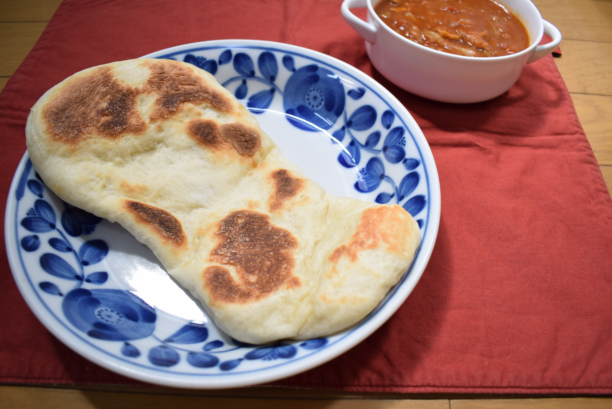

ピザ生地でナン
材料・金額
| 材料 | 購入金額 | 使用量 | 金額 | kcal |
|---|---|---|---|---|
| ピザ生地（1回分） | - | - | 33 | 398 |
| 鶏とトマト缶のスープ | - | 320g | 112 | 173 |
| バーモントカレー中辛1箱（6皿分） | 210 | 1片 | 35 | 100 |
| 合計 | - | - | 180 | 671 |
振り返り
先日、ピザを作ったときに、使わなかった生地（全量の半分）を半分ずつ、ラップに包んでポリ袋に入れて冷凍してありました。昨夜、このひとつを冷凍庫から冷蔵庫に移して解凍しておきました。なんとなくナンっぽく伸ばして、弱～中火にかけたフライパンで油をひかずに、蓋をして両面少々焼き目がつくぐらいまで焼いたらナンになりました。パンっぽいナン。モチっとして美味しかったです。ピザ生地を冷蔵庫で解凍しておくだけで簡単に使えることにも、ナンっぽいものになってしまうことにも驚きです。カレーは、トマトスープにカレールゥをいれたもので、これで一昨日作ったトマトスープを使い切りました。
ところで話題が変わりますが、ふと気が向いたので、家の周りの草をむしりました。1時間で汗だくです。トゲトゲの木が生えていました（むしれません）。